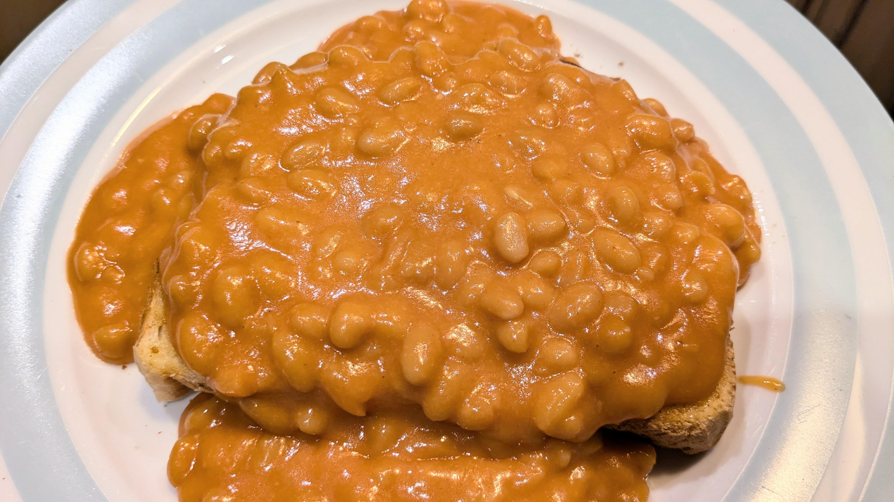

Home
Cheesey Beans

What is it?
"Cheesey beans" is a British staple food which can be enjoyed at any time of the day. It's so simple even your cat could make it while pepped up on catnip!
Ingredients
- Brown bread
- Canned beans
- Cheddar cheese
How to make
- Put the bread in the toaster
- Meanwhile, cook the beans in a saucepan until slightly mushy
- Add cheddar cheese to the beans
- Cook for a few minutes until cheese has melted
- Serve on toast